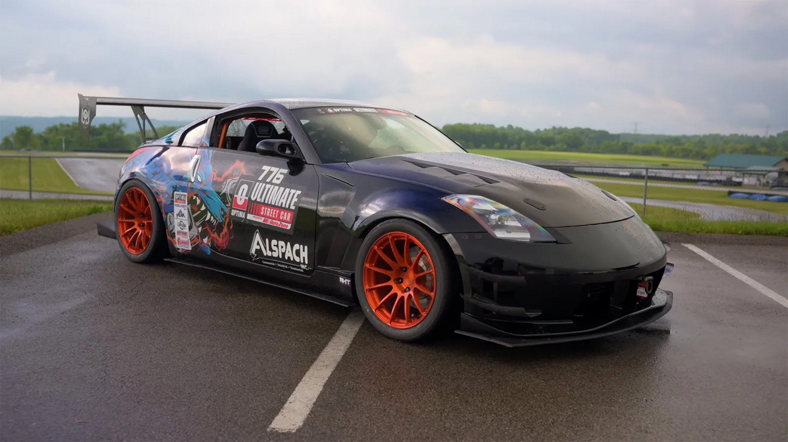
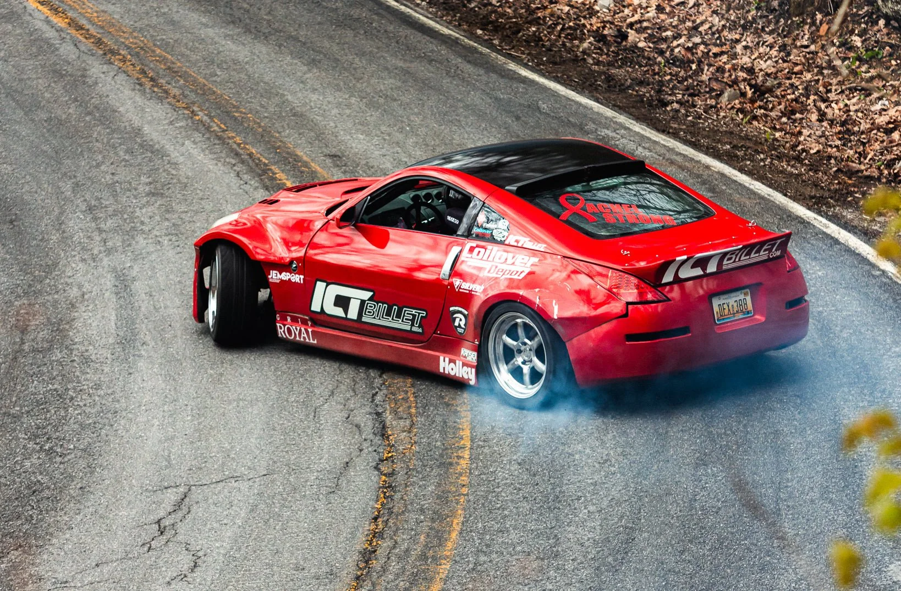
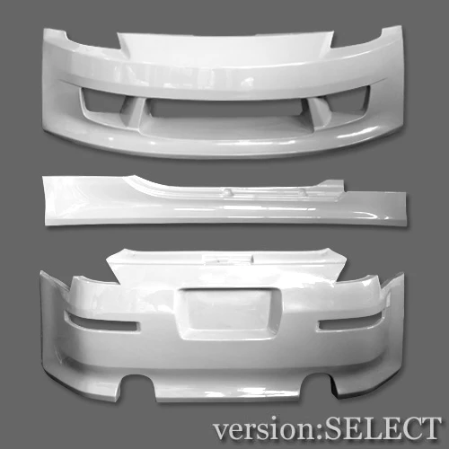
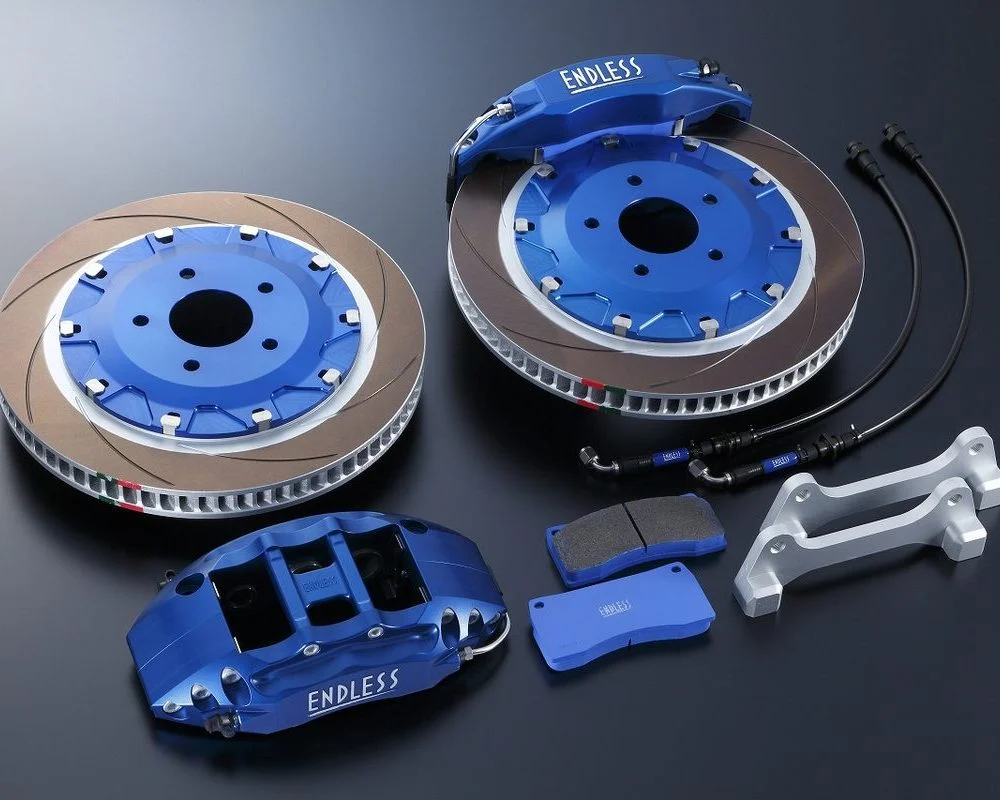
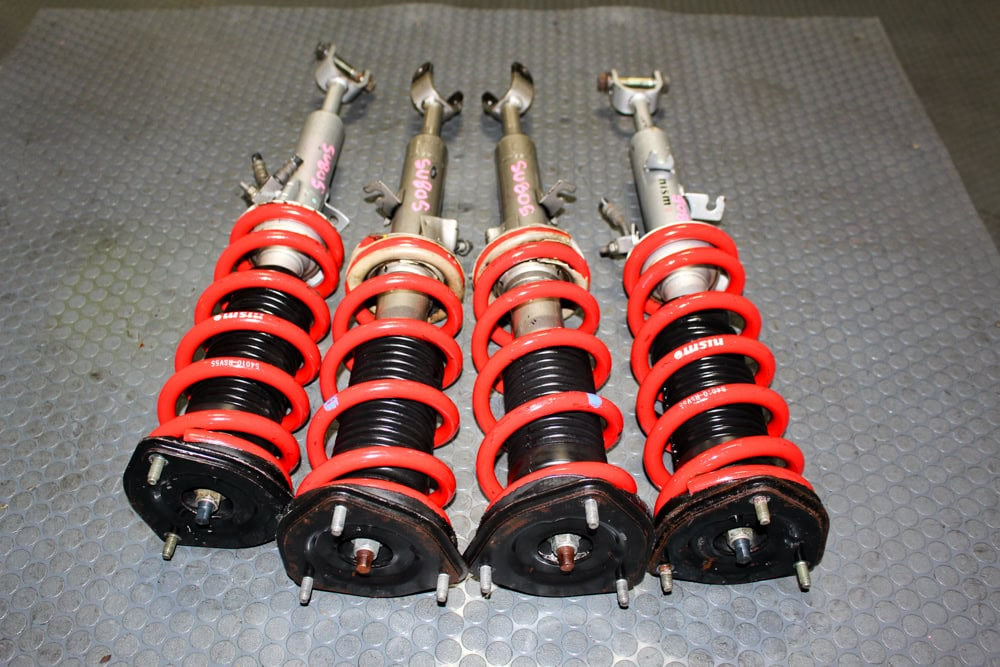

Modding and Customization
The Nissan 350Z has one of the most passionate and active modding communities in the automotive world. Because the car is so affordable, enthusiasts are constantly experimenting to see how far they can push its limits. The car serves as an amazing blank canvas, offering endless choices whether you want to change its style or build a track monster. Many owners start with simple bolt-on performance parts like high-flow intakes and custom exhaust setups to make the V6 engine breathe better. Others focus entirely on handling, swapping out the factory parts for adjustable coilovers and wider wheels to grip the road tightly. This incredible versatility is exactly why the 350Z remains a top choice for anyone looking to build a unique project car.
Aesthetic Modifications
Custom Paint Jobs and Body Kits
Many 350Z owners opt for custom paint jobs to make their cars stand out. Popular choices include matte finishes, metallic colors, and unique designs that reflect the owner's personality. Body kits are also a common modification, enhancing the car's aerodynamics and giving it a more aggressive look.

The Drifting Community

If you go to any local drift event, you are almost guaranteed to see a handful of 350Zs sliding around the track. The drifting community fell in love with this car because its front-midship chassis layout makes it incredibly predictable and easy to control sideways. To get the car track-ready, drivers usually upgrade the suspension and install steering angle kits to achieve those extreme drift angles. They also add structural upgrades like engine bay braces and upgraded brake setups to handle the intense abuse of track driving. The chassis is naturally stiff right out of the box, which gives drivers a lot of confidence when transitioning quickly between corners. It is this perfect blend of reliability, balance, and low cost that keeps the 350Z a dominant icon in the drift scene today.
Performance and Appearance modifications
- Custom Paint Jobs
- Body Kits
- Suspension Upgrades
- Steering Angle Kits
- Engine Bay Braces
- Upgraded Brake Setups


